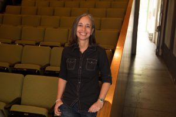

The wild project has a board and staff of dedicated individuals here to help make your event or performance happen flawlessly. They also help product our wild projectz series.
Our Staff

Ana Mari de Quesada
Co-Producing Artistic Director
Ana Mari has been working at the Wild Project since its opening in July 2007. First as the General Manager and as of 2017 as the Producing Artistic Director. As Producing Artistic Director Ana Mari has formed creative partnerships with the Current Sessions, Poetic Theater Productions, Contemporary Performance, New York No Limits, International Human Rights Art Festival, Angela DiCarlo, Jill Pangallo, Heather Litteer & Amber Martin. She has also helped develop the East Village Queer Film Festival as part of Wild Project’s Queer Initiative. Previously, Ana Mari was the Studio Administrator at The Actors Studio from 2013-1016. Ana Mari has worked as a Production Manager & Production Stage Manager on countless New York theatrical productions such as The Actors Studio productions of The Danube by Maria Irene Fornes, Mud by Maria Irene Fornes , The Last Days of Judas Iscariot by Stephen Adly Guirgis (La MaMa), First Born by Lyle Kessler , and Old Times by Harold Pinter. Ana Mari has also worked as a Production Manager for Rattlestick Playwrights Theater productions of my Lingerie Play by Diana Oh, Until The Flood by Dael Orlandersmith, Draw The Circle by Mashuq Deen. & The Enclave by Arthur Laurent. She has also toured with Big Art Group on North America & European tours of House of No More, Dead Set, S.O.S., The People and Cinema Fury from 2005-2012.

Tom Escovar
Co-Producing Artistic Director
Tom has been the co-producing artistic director at Wild Project since 2017. Since that time Tom has assisted in the development and implementation of Wild Project initiatives such as the East Village Queer Film Festival and the creative partnership growth with the International Human Rights Arts Festival and Poetic Theater Productions among others. Previously, Thomas was the executive director of independent theater company Push Productions from 1999-2009 and held several positions managing theaters in NYC. With Push Productions, Tom produced several world and New York premiere theatrical productions, such as; Secret Agenda of Trees, bunkerbaby, both written by Colin McKenna, and Saving the Greeks: One Tragedy at a Time. Other Push Productions include; Marat/Sade (Access Theater) and Faith (Flamboyan Theater), about the U.K/Argentina conflict in Falklands, written by Meredith Oakes (New York premiere). Thomas is also the founder and producer of the New York No Limits Film Series, an on-going film event showcasing independent cinema from around the world. In addition, Tom, who holds a degree in theater arts from Fordham University, is also the writer and director of several short films with his film production company and maintains his work with children in foster care.
Our Staff:
Milo Jordan
House Manager
Kryssy Wright
Technician
Hannah Cohen
Social Media Associate
Karen Greco
Press Representative
Our Board:
Ana Mari de Quesada
President & Producing Artistic Director
Tom Escovar
Vice President & Co-Producing Artistic Director
Caden Manson
Secretary
Michael Figliulo